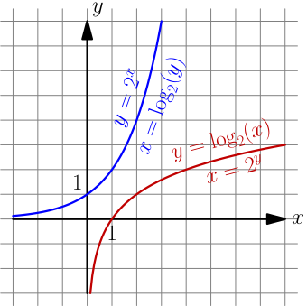

Exponent Functions and Logarithms¶
The above title sounds really boring, so I wonder how you ended up reading this thing. The mathematician inside may might find some of this interesting though.
This chapter assumes that you know derivatives.
Exponent Functions¶
The graph page contains some exponent and logarithm graphs, but calculating values for drawing them requires things like $a^{-1}$ if $x=-1$. Turns out that $a^{-b}=\frac{1}{a^b}$. For example:
$$\begin{align} 2^{-1} &= \frac{1}{2^1} = \frac 1 2 \\ 2^{-2} &= \frac{1}{2^2} = \frac 1 4 \\ 2^{-3} &= \frac{1}{2^3} = \frac 1 8 \end{align}$$These results agree with the graphs because if $x$ gets smaller, then $a^x$ also gets smaller if $a>1$.
The e constant¶
See Also
This video contains a different kind of introduction to $e$ with more facts but less details.
Let's try to find the derivative of $a^x$ where $a$ is a constant and $a>0$:
$$\begin{align} \frac{d}{dx} a^x &= \lim_{h \to 0} \frac{a^{x+h}-a^x}{h} \\ &= \lim_{h \to 0} \frac{a^x a^h - a^x \cdot 1}{h} \\ &= \lim_{h \to 0} \frac{a^x(a^h-1)}{h} \\ &= \lim_{h \to 0} \left(a^x \frac{a^h-1}{h}\right) \\ &= a^x \cdot \lim_{h \to 0}\frac{a^h-1}{h} \\ \end{align}$$Note that the only $x$ in what we ended up with is outside the lim, so the entire lim thing is actually yet another constant. So, wouldn't it be handy if the whole lim thing was just 1? Then $\frac{d}{dx} a^x$ would be just $a^x$.
Turns out that there's only one $a$ value that satisfies this, and mathematicians call that number $e$.
$$\begin{align} \frac{d}{dx} e^x = e^x \end{align}$$$$\begin{align} e = \lim_{t\to0}\ (1+t)^{\frac 1 t} = \lim_{n\to\infty} \left(1 + \frac 1 n \right)^n \end{align}$$The $n$ thing is really same as the $t$ thing with $n=1/t$. So if $n$ approaches infinity, $t=1/n$ approaches 0 because dividing by a big number results in a small number.
Let's make sure that the $t$ thing works with the derivative thing. It doesn't matter how $t$ and our $h$ relate to each other as long as they both go to 0, so let's set $t=h$ and calculate the derivative:
$$\begin{align} \frac{d}{dx} e^x &= e^x \cdot \lim_{h \to 0}\frac{e^h-1}{h} \\ &= e^x \cdot \lim_{h \to 0}\frac{\left((1 + h)^{\frac 1 h}\right)^h-1}{h} \\ &= e^x \cdot \lim_{h \to 0}\frac{(1 + h)^{\frac 1 h h}-1}{h} \\ &= e^x \cdot \lim_{h \to 0}\frac{(1 + h)^1-1}{h} \\ &= e^x \cdot \lim_{h \to 0}\frac{1+h-1}{h} \\ &= e^x \cdot \lim_{h \to 0}\frac h h \\ &= e^x \cdot 1 \\ \end{align}$$Let's also calculate an approximate value of $e$ and check the answer:
>>> n = 10000000000
>>> (1 + (1/n))**n
2.7182820532347876
>>> import math
>>> math.e
2.718281828459045
I think this is quite nice. We got this magic $2.718...$ number out of pretty much nowhere. You'll be amazed by all the places where it occurs.
Many programming languages have an exp(x) function that returns $e^x$, and
it's usually more precise than e.g. pow(e, x) or e**x, although the
difference is hardly noticable:
>>> math.exp(3)
20.085536923187668
>>> math.e**3
20.085536923187664
Logarithms¶
A logarithm is the inverse of an exponent. If $y=b^x$, then $x = \log_b(y)$. You can also think of logarithms like $\log_b(b^x) = x$ and $b^{\log_b(x)} = x$. The $b$ is known as the base of the logarithm.
The inversiness looks like this in graphs:

Note that the $\log_2$ graph does not exist in the $x<0$ area because $2^x>0$ with any $x$. You cannot take any logarithm of a zero or a negative value.
The base $e$ logarithm $\log_e(x)$ is often written as $\ln(x)$. The n is short for "natural", and $\log_e$ is called natural because it appears surprisingly often in all kinds of places because of the $e$.
Many programming languages and calculators have a log(x) function, and
usually it returns $\ln(x)$, $\log_2(x)$ or $\log_{10}(x)$. If you aren't sure
which logarithm it is, you can try it like this:
>>> import math
>>> math.log(2)
0.6931471805599453
>>> math.log(10)
2.302585092994046
>>> math.log(math.e)
1.0
Python's math.log(x) seems to return $\ln(x)$.
The summary page contains a bunch of formulas that make logarithms very useful. The proofs are below.
Use the $\log_b(x) = \displaystyle\frac{\log_a(x)}{\log_a(b)}$ formula if your programming language doesn't have a logarithm that returns what you want:
function log4(x) {
// this works with any logarithm, so i don't even need to care about
// which logarithm Math.log is in javascript
return Math.log(x) / Math.log(4);
}
Most programming languages have a few different logarithm functions like e.g.
log2 and log10, and some allow specifying a base like math.log(x, 4)
in Python.
Logarithm Rule Proofs¶
If you don't like proofs then don't read these. The proofs are here just because I didn't feel like making a "More Logarithms" chapter just for them.
Here $x>0$, $y>0$, $a>0$, $a\ne1$, $b>0$ and $b\ne1$. The proofs are ordered so that they don't use anything that hasn't been proved before them, but they use things that directly follow from the inversiness like $b^{\log_b(x)}=x$.
$$\begin{align} x^y &= x^y \\ b^{\log_b(x^y)} &= \left(b^{\log_b(x)}\right)^y \\ b^{\log_b(x^y)} &= b^{\log_b(x) \cdot y} \\ \log_b(x^y) &= \log_b(x) \cdot y \\ &= y \log_b(x) \end{align}$$Derivative of any exponent function¶
Earlier we tried to find the derivative of $a^x$ where $a>0$ and we ended up with this:
$$\begin{align}\frac{d}{dx} a^x = a^x \cdot \lim_{h \to 0}\frac{a^h-1}{h} \\ \end{align}$$But now we know that $\frac{d}{dx} e^x = e^x$ and we also know logarithms. Let's keep working on the derivative.
$$\begin{align} a^x = e^{\ln(a^x)} = e^{x \ln(a)} \end{align}$$Here I used the $\log_b(x^y)=y \log_b(x)$ formula that we proved above. So it looks like we could do this (remember to use the chain rule):
$$\begin{align} \frac{d}{dx} a^x = \frac{d}{dx} e^{x \ln(a)} = \underbrace{e^{x \ln(a)}}_{\text{this is }a^x} \cdot \frac{d}{dx}(x \underbrace{\ln(a)}_\text{constant}) = a^x \ln(a) \end{align}$$That's quite nice, but now we also have this:
$$\begin{align} \frac{d}{dx} a^x &= \frac{d}{dx} a^x \\ a^x \ln(a) &= a^x \cdot \lim_{h \to 0}\frac{a^h-1}{h} \\ \ln(a) &= \lim_{h\to0} \frac{a^h-1}{h} \end{align}$$This is why the base $e$ logarithm is known as the natural logarithm, or $\ln$ for short. It appears "naturally" in surprising places.
Derivative of a logarithm¶
Let's try to find $\frac{d}{dx} \ln(x)$ where $x>0$. We'll use the $\ln(x/y)=\ln(x)-\ln(y)$ and $\ln(x^y)=y\ln(x)$ rules right to left.
$$\begin{align} \frac{d}{dx} \ln(x) &= \lim_{h\to0} \frac{\ln(x+h)-\ln(x)}{h} \\ &= \lim_{h\to0} \frac{\ln\left(\frac{x+h}{x}\right)}{h} \\ &= \lim_{h\to0} \left(\frac 1 h \ln\left(\frac{x+h}{x}\right)\right) \\ &= \lim_{h\to0} \ln\left(\left(\frac{x+h}{x}\right)^{\frac 1 h}\right) \\ \end{align}$$Now we'll apply the $\ln(a)=\displaystyle\lim_{h\to0}\textstyle\frac{a^h-1}{h}$ thing we ended up with last time. It doesn't matter how the $h$ in this thing and the $h$ in our $\ln$ derivative thing relate to each other as long as they both go to 0, so we need just one $\lim$.
$$\begin{align} \lim_{h\to0} \ln\left(\left(\frac{x+h}{x}\right)^{\frac 1 h}\right) &= \lim_{h\to0} \frac{\left(\left(\frac{x+h}{x}\right)^{\frac 1 h}\right)^h - 1}{h} \\ &= \lim_{h\to0} \frac{\left(\frac{x+h}{x}\right)^{\frac 1 h h} - 1}{h} \\ &= \lim_{h\to0} \frac{\left(\frac{x+h}{x}\right)^1 - 1}{h} \\ &= \lim_{h\to0} \frac{\frac{x+h}{x} - 1}{h} \\ &= \lim_{h\to0} \frac{\frac x x + \frac h x - 1}{h} \\ &= \lim_{h\to0} \frac{1 + \frac h x - 1}{h} \\ &= \lim_{h\to0} \frac{\left(\frac h x\right)}{h} \\ &= \lim_{h\to0} \frac{h}{xh} \\ &= \frac{1}{x} \end{align}$$So we had these horrible messes but we ended up with just $\frac 1 x$. I think this is nice.
Let's generalize this a bit with the $\log_b(x) = \displaystyle\frac{\log_a(x)}{\log_a(b)}$ rule:
$$\begin{align} \frac{d}{dx} \log_b(x) &= \frac{d}{dx} \left(\frac{\ln(x)}{\ln(b)}\right) \\ &= \frac{d}{dx} \Biggl(\underbrace{\frac{1}{\ln(b)}}_\text{constant}\ln(x)\Biggr) \\ &= \frac{1}{\ln(b)} \cdot \frac{d}{dx} \ln(x) \\ &= \frac{1}{\ln(b)} \cdot \frac 1 x \\ &= \frac{1}{x \ln(b)} \end{align}$$Again, the natural logarithm appears in a calculation that seems to have nothing to do with $e$.